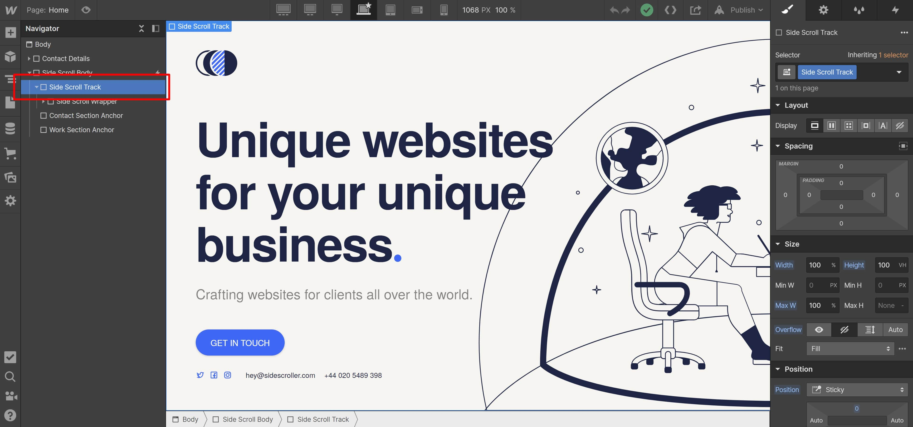
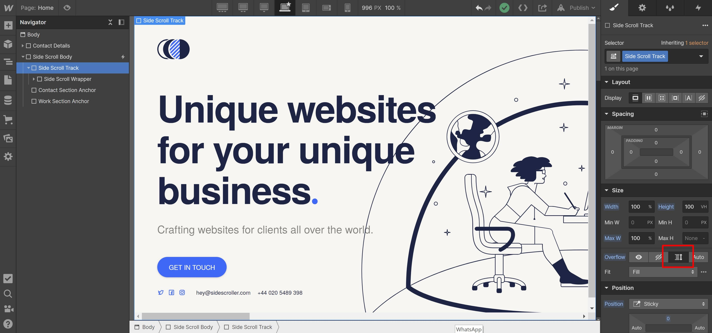
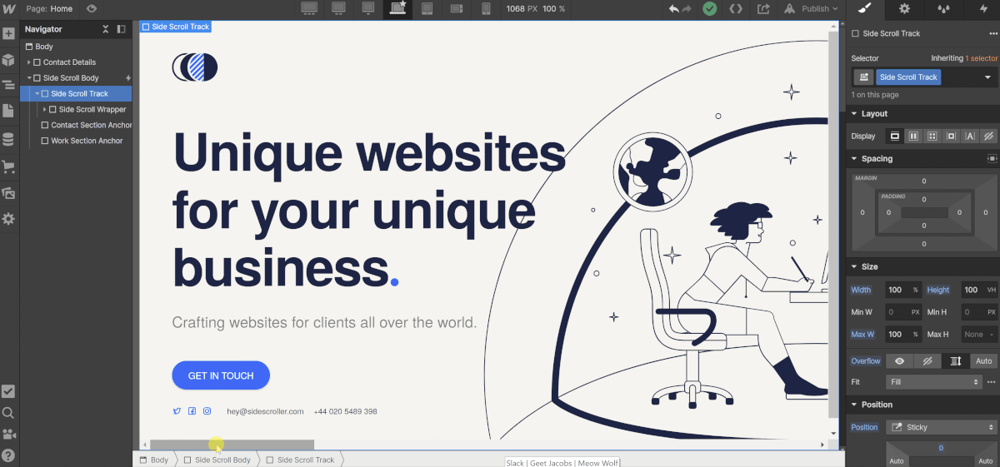

On Desktop in the Webflow Designer there's no way to side scroll the page unless you're in Preview mode which doesn't help much as the content can't be edited in Preview mode, so we need to do these easy steps to see all the side scrollable content.
Locate the element in the Navigator panel called "Side Scroll Track" select it.
With the "Side Scroll Track" highlighted, go to the Styles panel, and change the "Overflow" from "Hidden" to "Scroll".
Now you'll see the side scroll bar show up at the bottom of the Designer window, you can use this to navigate around the side scrolling content.
Any questions? Email me aaron@aarongrieve.co.uk